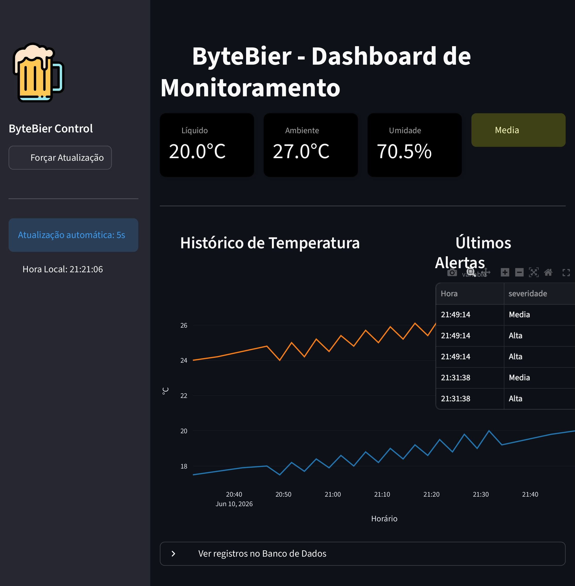

Sistema de automação e monitoramento de temperatura para produção de cerveja artesanal, utilizando ESP32, sensores, relé, API e banco de dados.
Na produção de cerveja artesanal, a temperatura influencia diretamente o sabor, a fermentação, a estabilidade e a qualidade final da bebida. Pequenas variações podem afetar o desempenho da levedura, o corpo da cerveja e o resultado sensorial.
Cada etapa do processo possui uma faixa ideal que precisa ser acompanhada.
Sem monitoramento, a produção fica mais sujeita a variações e perda de qualidade.
Registrar os dados permite analisar o processo e melhorar futuras brassagens.
O objetivo do Byte Bier é desenvolver um sistema capaz de medir a temperatura do líquido, acompanhar a temperatura ambiente e umidade, controlar um atuador por relé e preparar os dados para visualização em um dashboard próprio.
Uso do ESP32 como microcontrolador principal do sistema.
Envio das leituras para uma API por meio de requisições HTTP.
Integração com painel para acompanhar leituras, histórico e alertas.
O processo de produção envolve etapas quentes e frias. O controle térmico é especialmente importante na mostura, fervura, fermentação e maturação.
O malte é preparado e misturado à água em temperatura controlada para extração dos açúcares.
O mosto é separado dos grãos e fervido, etapa em que também ocorre a adição de lúpulo.
O líquido é resfriado para receber a levedura e iniciar a transformação dos açúcares em álcool e CO₂.
A cerveja estabiliza suas características antes de ser envasada e apresentada.
O protótipo utiliza sensores e atuadores conectados ao ESP32 para medir, exibir e controlar o processo de temperatura.
Microcontrolador responsável pela leitura dos sensores, lógica de controle e comunicação Wi-Fi.
Sensor de temperatura do líquido, usado para acompanhar o mosto ou o ambiente de fermentação.
Sensor utilizado para temperatura ambiente e umidade relativa.
Atuador responsável por ligar ou desligar o sistema de aquecimento ou refrigeração.
Permitem ajustar o setpoint e trocar a etapa do processo.
Mostra temperatura, setpoint, etapa atual e status do relé diretamente no protótipo.
O sensor mede a temperatura do líquido. O ESP32 compara o valor medido com o setpoint da etapa atual. Caso a temperatura saia da faixa definida, o relé é acionado para corrigir o processo.
Temperatura do líquido, temperatura ambiente, umidade e etapa do processo.
O ESP32 compara a leitura com o valor desejado e decide se deve acionar o relé.
Acionamento do relé, atualização do LCD e envio das leituras para a API.
A arquitetura foi pensada para permitir leitura local no protótipo e envio dos dados para uma aplicação, sem depender de plataformas prontas como Blynk ou Arduino Cloud.
O painel concentra as leituras do protótipo, acompanha a estabilidade da fermentação e mostra o estado do controle de temperatura em uma interface única.

A dashboard do ByteBier foi desenvolvida para acompanhar em tempo real as condições do processo cervejeiro, reunindo informações dos sensores, histórico de leituras e alertas em uma única interface.
O projeto une eletrônica, automação, programação e processo cervejeiro em uma solução prática para monitoramento e controle de temperatura.
Hardware com sensores, LCD, botões e controle por relé.
Leituras preparadas para armazenamento em banco de dados.
Identificação de temperaturas fora da faixa ideal de cada etapa.
Desenvolvimento realizado por alunos de Engenharia da Computação, com divisão de funções entre programação, eletrônica, montagem, documentação, logística e organização do projeto.